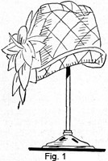
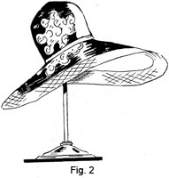
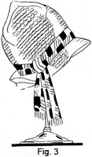
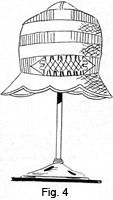
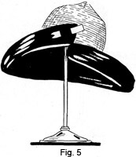
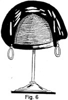

1928—The New-Way Course in Millinery and Hat Design
Lesson 17—Planning a Hat
Planning a Hat
Let us pretend that you want a new hat, or that you wish to make a hat for one of your friends. What are the first things to take into consideration? What should the material be, the trimming, the type of frame? What is the very first thing to think about?
Before anything else, you must take the season into consideration. Is it summer, or winter, or in-between season? Is Spring just around the corner, or will Fall soon be here? The type of hat and the materials and trimmings depend almost entirely upon the season.
You have learned that after season, harmony of color, suitability with the rest of the costume, individuality and personality must be taken into consideration. Having weighed all these important points in our mind, let us now see how we proceed with the actual planning of the hat.
First, of course, we decide on the color. If it is to be a hat that will be worn constantly—to business, let us say—it is wisest to choose a color that will harmonize with the most of our clothes. Paisley patterns from time to time enjoy quite a vogue in millinery. When the colors are of the more conventional shades of gold, red and blue, the paisley hat "goes" with almost any costume. A dark blue hat is always appropriate, and black is ideal for those who can wear it.
But perhaps, the hat is for some special occasion, to be worn with some special dress or wrap. Then choose a color that either harmonizes or matches—but be very careful that your dress is not one shade of light blue and your hat another shade of light blue. Remember that colors must either match absolutely, or be of some contrasting, harmonizing color.
The color decided upon, we now determine the best place to purchase the material, and indeed, what kind of material it shall be. In previous lessons you were taught the correct materials for various hat occasions, but it is important that you know also how to buy these materials.
The various kinds of materials have been described so that you should have no trouble in recognizing them at once. If you cannot distinguish good quality velvet from poor quality, if you cannot recognize satin when you see it, or duvetyne—refer to the lesson and review it until you know all the materials thoroughly.
When purchasing materials, always look at them in daylight. Colors sometimes appear very different under electric light, and it is best to look at them in both lights. Then you can make no mistake in color or texture. Be careful not to purchase more material than you need. When purchasing velvet and duvetyne, and other pile materials, it is best to buy the material on the bias for the tip, or upper crown. Most millinery supply shops cut one end of the material on the bias for the convenience of their patrons.
After buying the piece of bias material for the tip, have the other end of the material used for the brim, purchasing as much as you need of the length of the material. Use a tape measure to determine how much you will require for the brim and how much for the space between tip and brim that is not covered by the bias.
The Frame
You must now decide what kind of shape you want. This is the time to determine your own requirements, the lines that are most becoming to you. Have you a full, round face; an oval face; a small, tip-tilted nose? Refer to the last lesson and find out exactly what type of hat is most becoming to you. Remember that the more you review your lessons, the more you refer to them, the deeper they will be impressed upon your memory and the more readily you will be able to recall them.
Certain materials and shapes require buckram frames; others require wire frames. Do you know what type of frame to employ for the hat you have in mind—the materials and trimmings you have in mind? Perhaps the frame is one you can purchase easily; it may be one you prefer to make yourself. All these details are important and should be given careful consideration.
Of course, to be an expert, competent milliner you should be able to make all types of frames, whether from buckram or wire. But very often you will be able to obtain just the frame you want in a millinery supply shop, at a very small cost. It is better to purchase the frame under these circumstances than to take the time to make it.
Choice of Trimmings
Sometimes it is best to select the trimming after the frame is covered. You may purchase a trimming before covering the hat, and when it is covered find that the trimming gives an entirely different effect than you had planned for. But if you expect to have just one rose on a black velvet hat, or one bit of jade on a satin hat, you may safely purchase it beforehand.
When purchasing trimmings, always take suitability and harmony into careful consideration. Harmony, not only in color, but between the type of hat and the type of trimming, between the season and the trimming, between the wearer and the trimming. Your choice of trimmings is very important and you should devote a great deal of your time in studying the various types of trimmings on display in millinery supply shops and department stores. It is the best possible plan for developing taste in the matter of hat-trimming.
A hat can be entirely devoid of trimming, and yet smart and attractive. The simple fold in the material of a hat, or rows of folds, are often employed. Sometimes the French, or triple-fold trimming is used, and sometimes nothing but a simple ribbon band encircles the crown. Trimming does not always mean elaboration, and it depends entirely upon your good taste and judgment to determine what type of trimming—or whether any trimming at all—is needed.
A Few Suggestions on Hat Styles
We are going to show here several types of hats, trimmed and finished. We must remember that hats change with each new season, but the same style recurs in a little different form no matter what the prevailing mode may be. This is what makes millinery so interesting because if the fundamentals are mastered, it is merely a matter of using your own good judgment in copying designs and the applying of the correct trimmings.
It will be helpful to you to study these hats carefully, determine what colors, materials and trimming could be used, and whether you would have trimmed the shapes in the same way. Pick out the hat that you think would be most becoming to you—and the one you think would be the least becoming. See if you can give yourself logical reasons for your choice.
Fig. 1 shows a very pretty quilted taffeta hat. It is very soft in effect and is an admirable example of a small hat which is worn so much with sport costumes. This particular model is made of a pale rose georgette smoothly placed over felt. The surface is stitched in diagonal crossings in the brim, side crown and top. The edge is finished with binding of narrow self-colored ribbon. At one side is placed a large flower of cut felt, the petals resembling a gardenia, and the whole has been carried out in the same tone. Such lovely pastel tints are used in these dainty hats.
For midsummer, when one must express the joy of sun and trees and flowers, there can be nothing more charming than the drooping brim hat such as is shown in Fig. 2. This hat may be made of horsebraid, or the crown made of this braid and the brim of satin, faced with a light colored crepe or georgette. A band of self colored grosgrain ribbon is placed around the crown and the flowers may be made or purchased just as you desire.
Glance atFig. 3 and see what can be accomplished by the use of novelty braid. This hat is not only very smart in its development but charmingly youthful. It may be made of any color braid you desire. A scarf of harmonizing colors is knotted on the right side. A plaid trimming in bright colors is very much a la mode.
Fig. 4 shows a peak crowned poke with a scalloped brim. It may be made of satin and ! straw or entirely of either material. A novel feature is shown in the ornamental arrangement of smocked ribbon immediately in front, and the whole hat is an admirable example of a close-fitting style. It is necessary, of course, that the smocking be perfectly made as any fault in this detail would ruin the style of the hat. The shape would be pretty covered with orchid, Copenhagen, maize or monkeyskin satin, and then the simplicity of trim, the smocking, is the feature that commends it to millinery contingent. Attention is also directed to the peak point of the crown, and the scalloped brim, which also share the novelty.
Of the making of useful black hats there is no end, and likewise there is no limit to the combinations that may be devised. Fig. 5 shows straw combined with black felt or velvet could be used if you desire. The brim is turned up at the right front and the edges on both sides of this cut are rounded, the left side retaining its original pattern, while the right side is held up against the crown by a flat, pointed double pin of rhinestones.
Fig. 6 is a charming model showing fancy black straw as the foundation. It is finished with a wonderful halo of black felt or any color could be used. This felt covers the crown top from side to side, a narrow bandeau of felt forming a finish all around. The outstanding feature of this model is the two upright silver whips which ornament each side, their ends twisted in a decorative manner which makes them appear almost like earrings. The very simplicity of this style makes it in keeping with the best modes of the moment. Of course, bengaline, satin, velvet, or crepe de chine, may be substituted for the felt.
Has the survey of these six types of hats helped you to visualize the hats you intend making? Have you picked out the one most becoming to you, the one you feel would look best if you could actually try the hats on? If you have studied this lesson correctly, if you have spent at least five minutes studying each hat and suggesting in your own mind different methods of trimming, finishing, etc., you should now be able to plan hats for yourself without the least hesitancy or trouble.
Decide upon the type of hat, according to season. Choose the color most becoming to you and most in accord with your present requirements (according to costume). Buy your materials, decide on your trimmings, actually make and finish a hat for yourself. Even though it falls far below your expectations, make it so that you may compare it later with the hats you make when the course is completed, so that you may find your mistakes by actual experience learn to avoid them.
Or, if you prefer, finish this lesson first, and then make a hat for yourself. But be always on the alert for new ideas, for style and trimming suggestions. Wherever you chance to be, study the hats that people are wearing and that shops are showing. In this way you will assimilate much information and a great many helpful ideas that will prove valuable later.
How to Copy a Hat
Very often, instead of planning a hat, you will find occasion to copy some distinctive shape you have seen, and depend solely upon attractive touches of trimming to create an individual touch. There is an art to copying a hat—just as there is an art to creating a hat seen only in your mind's eye. Indeed, to some people the actual copying of a hat seen in a shop window presents more of a problem than the inception of an original style.
Let us see, then, just how we will proceed with the copying of a hat we see in a shop window or on some fashionable woman we have met at tea. Of course, if a picture of the hat is available, our work will be made very much simpler for we will be able to take exact measurements. But if we catch only a fleeting glimpse of the hat we must depend upon our judgment of proportions.
In either case, whether we see the hat itself or a picture of it, we must first make a wire frame of the shape. We say wire frame because wire is easiest to work with, can be adjusted easily, changed and made to suit. If a buckram or willow frame is desired, the wire frame may be used as a pattern.
When you see a hat that you want to copy, first make careful note of its lines. Try to visualize the skeleton frame—the hat without the trimming. If you can, make a rough sketch of the frame—but a mental sketch will do if you have a retentive memory.
As soon as you can, to obviate the possibility of forgetting the correct lines, make a wire frame of the shape you have seen. Begin with the headsize band as taught in a previous lesson; put on the brace wires and proceed step by step to build up a frame pattern of the shape you have seen. Fasten the wires together loosely so that the hat may be made smaller or enlarged if found necessary, and bend the brace wires to take the exact shape of the frame you have seen.
Of course, if you have the hat in front of you, your work will be greatly facilitated. No matter how odd or unusual the shape of the hat may be, if you have a model of it in your hands you will be able to make a wire duplicate of it, even though you are not able to make a paper pattern of it. Then, too, you can take the exact measurements right from the hat in your hands.
As before, make the headsize band first, and proceed step by step with your frame. When you have completed the wire frame, compare your copy with the original to prove the accuracy of your work. Measure the length of the brace wires and compare with measurements taken at the identical points on the hat you are copying. Make other measurements to prove that you have made an exact duplicate.
Just one word of caution, regarding the copying of hats. In gauging the proportions of a hat, always be sure that you observe personal requirements carefully and that you use your best judgment. Do not attempt to copy a hat meant for a tall, blonde person if the hat is intended for a short person with dark hair. Take the face into consideration and learn to judge accurately just what length of the brace wires will make a becoming brim. Accurate judgment is of inestimable help to the milliner, and fortunately it is one of the "knacks" that can be developed.
Always study the hat you are going to copy carefully and through this careful observation get as accurate an idea as possible of the proportions of the hat. Copy it, and then alter it to suit the requirements of the particular face for which it is being made. Above everything else, always be guided by the consideration of balance, rhythm and proportions—the three features of design which have been taken up in earlier lessons.
The trimming of a hat can be very easily copied, of course, but one need not necessarily choose a certain trimming just because it happens to grace the frame one is copying. Frequently, a slight change of trimming, a slight variation in the method of applying the trimming or even in the draping of the brim, alters the hat and gives to it a distinct, new design. This, too, has been taken up more in detail in earlier lessons.
Suppose you glance through a fashion magazine and select an attractive hat—a hat you would like to have. Try to make a duplicate of the hat. Omit the trimming if you like, but make an exact duplicate of the shape. Don't be afraid to attempt it. Remember that you could not hope to enter the Olympic races after having taken but one swimming lesson. Nor can you expect to make a prize-winning hat while you are still studying the very fundamental principles of millinery and millinery design. And remember that each little bit of construction work you do in millinery makes you just so much more deft and skilled in the art of molding buckram, wire, materials and trimmings into beautiful hats.
Experiment, then, and see how nearly you can duplicate a shape that attracts you. And if you frankly want to master the principles of millinery and become a clever creator of fashionable hats, keep practicing and experimenting until you can duplicate exactly any hat you see.
LESSONS 16 AND 17
QUESTIONS
1. What must be taken into consideration when planning a hat?
2. Why should a short woman avoid a hat with a drooping brim?
3. What type hat should the tall person wear?
4. What kind of a hat should be chosen for the woman with a full face? a) Do all colors look alike under artificial light and under sunlight? b) Explain what should be done?
5. What are the five determining factors in the artistic creation of hats?
6. If you plan on wearing a flowered chiffon dress to some afternoon affair, what kind of a hat would be appropriate?
7. What is a splendid "in-between season" hat material?
8. When copying a hat what is the first thing to do?